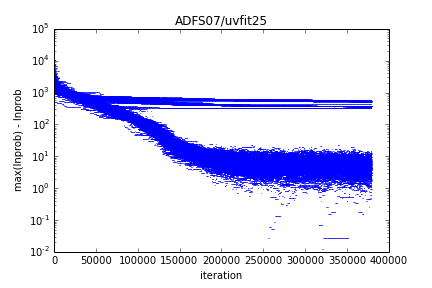

The first step in determining whether you have an acceptable model is to plot the convergence profile of the goodness of fit estimate (by default, the maximum likelihood estimate). You can do this using visualize.convergence()
import visualize
visualize.convergence()
This routine produces convergence.png, a plot of the difference between max(lnprob) and lnprob as a function of iteration. This turns out to be a convenient way to visualize the convergence, but it does mean that the best-fit model is shown at the bottom of the plot.
For ADFS07, I needed about 250,000 iterations to reach convergence. The worst model fit has max(lnprob) - lnprob ~ 1e5. Both values are fairly typical for a single strongly lensed source like ADFS07.
